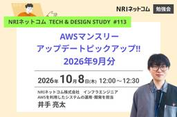

NRIネットコムBlog
https://tech.nri-net.com/
NRIネットコム社員が業務で利用している幅広い技術やナレッジについて紐解くブログメディアです。
フィード

AWSマンスリーアップデートピックアップ!! 2026年9月分 ～NRIネットコム TECH AND DESIGN STUDY #113～
NRIネットコムBlog
こんにちは、ブログ運営担当の遠藤です。 10/8（木）12:00～12:30 当社主催の勉強会「NRIネットコム TECH AND DESIGN STUDY #113」が開催されます!! 今回のTECH & DESIGN STUDYでは、日々数多く発表されているAWSのアップデートのうち、当社の腕利きエンジニア目線で厳選した前月のアップデート情報をお話させていただきます！ 登壇者 井手 亮太 AWSを利用したシステムの運用･開発を担当 執筆したブログ: https://tech.nri-net.com/archive/author/r-ide-ryota 日程・タイムスケジュール 10/8（木…
7日前

全人類（ほぼ）AWS Organizations の上でAWSを利用している、その世界を知る話 ～NRIネットコム TECH AND DESIGN STUDY #112～
NRIネットコムBlog
こんにちは、ブログ運営担当の遠藤です。 9/30（水）12:00～12:30 当社主催の勉強会「NRIネットコム TECH AND DESIGN STUDY #112」が開催されます!! 発表概要 AWSを利用している皆さんは、自分が AWS Organizations の上でAWSを利用していることを意識したことはありますか？ 実は、AWSとの直接契約でスタンドアローンアカウントを利用しているケースを除き、多くのAWS利用者は間接的または直接的に AWS Organizations 配下のAWSアカウントを利用しています。 AWS Control Tower によるマルチアカウント環境、企業…
8日前
「AWS FinOps Agent」を「AWS Organizations」環境で最大限活用する話
NRIネットコムBlog
本記事は AWSアワード受賞者祭り 2026 25日目の記事です。 🏆 24日目 ▶▶ 本記事 🌐 用語 はじめに：AWS FinOps Agent とは AWSアカウント単体で「AWS FinOps Agent」を利用する セットアップします エージェントのWebコンソールからアクセスして利用します 「AWS Organizations環境」で複数のAWSアカウントに対して「AWS FinOps Agent」を利用する （おまけ）AWS Billing Transfer によるAWSアカウント管理&請求代行サービスプランで請求代行×「AWS FinOps Agent」を活用する さいごに こ…
15日前
Amazon ECS デプロイで何が起きた？調査に役立アップデートをまとめてみた
NRIネットコムBlog
本記事は AWSアワード受賞者祭り 2026 24日目の記事です。 🏆 23日目 ▶▶ 本記事 ▶▶ 25日目 🌐 こんにちは、井手です。 Amazon Elastic Container Service（ECS） のデプロイで、次のような場面に遭遇したことはないでしょうか。 デプロイに失敗したが、どこで問題が発生したのか分からない ECS サービスイベントや CloudWatch Logs を何度も確認しながら原因を探している 結局、原因特定までに多くの時間を費やしてしまう 私自身も、このような調査に苦労した経験があります。 そんな中、2026年7月に AWS から ECS のデプロイ調査を…
16日前
新しいAWS Security Hubは何が変わったのか
NRIネットコムBlog
本記事は AWSアワード受賞者祭り 2026 23日目の記事です。 🏆 22日目 ▶▶ 本記事 ▶▶ 24日目 🌐 こんにちは、西内です。 All Certificationも今年で3年目になりました（多分）。 今年は更新ラッシュなのですが、果たして来年は維持できているでしょうか。 本題に入りますが、2025年のre:Inforceで新しいAWS Security Hubが発表され、同年12月2日に一般提供されました。 発表当初は「AWS Security Hub Advanced」という名称でしたが、その後「AWS Security Hub」に変わり従来のAWS Security Hubは「…
19日前
IAM Identity Centerを理解するために最初に押さえたい3つのポイント
NRIネットコムBlog
本記事は AWSアワード受賞者祭り 2026 22日目の記事です。 🏆 21日目 ▶▶ 本記事 ▶▶ 23日目 🌐 はじめに こんにちは、栗田です。おかげさまで今年もJapan All AWS Certifications Engineersを受賞することができました。3年連続3度目の受賞ということで、このアワードブログ祭りに登場するのも3年連続3度目となります。 個人的な話にはなりますが、ここ最近、IAM関連のサービスを扱う機会が多くありました。 AWS IAMといえば、AWSに触れ始めてからかなり序盤で出会うサービスではあるものの、非常に奥が深いサービスであると思っています。 IAMとひと…
20日前
WebディレクターがAWS全冠をしてAI時代に考えたこと
NRIネットコムBlog
本記事は AWSアワード受賞者祭り 2026 21日目の記事です。 🏆 20日目 ▶▶ 本記事 ▶▶ 22日目 🌐 はじめに なぜWebディレクターがAWSを学んだのか All Cert達成後、Summitで感じた危機感 AIを活用した資格学習 判断理由を聞く 身近な例に置き換える 異なる立場からレビューしてもらう 公式情報とハンズオンで確かめる おわりに はじめに こんにちは。Webディレクター兼フロントエンドエンジニアの荒木です。普段はWebサイトの開発やプロジェクトの進行に携わっています。 このたび、AWSの表彰プログラム「2026 Japan All AWS Certification…
21日前
NRIネットコムBlog 7月アクセス数ランキング!!
NRIネットコムBlog
こんにちは、ブログ運営担当の池部です。 7月のブログアクセス数ランキングをご紹介します！！ （2026年7月1日~7月31日計測） 7月アクセス数TOP10 第1位 カバレッジの種類～C0・C1・C2・MCC～ tech.nri-net.com 第2位 【初心者向け】Swaggerとは？シンプルに解説 tech.nri-net.com 第3位 Google タグ ゲートウェイ（GTG）ってなに？ - サーバーサイド タグ（sGTM）を利用して導入してみた tech.nri-net.com 第4位 「何もない」を表す概念について ～0やnullとは～ tech.nri-net.com 第5位 M…
23日前
【AWS】メール × Bedrock で自分専用の"推し活ライブ自動収集エージェント"を作ってみた
NRIネットコムBlog
本記事は AWSアワード受賞者祭り 2026 20日目の記事です。 🏆 19日目 ▶▶ 本記事 ▶▶ 21日目 🌐 はじめに 作ったもの 使った技術 なぜこの設計になったか メールから「好み」を推測する 実装を見送った機能 アーキテクチャ概要 構成図 主要コンポーネントと役割 詰まったポイント 1. iCloud IMAPでRFC822マクロが動かない 2. Bedrockの「推論プロファイル」の壁 3. 「裏取り」の設計が現実に合わせて変わった 4. 表記ゆれとバンドメンバー名の誤検出 5. 「カレンダー重複登録」事件 実際に使ってみる まとめ 今後やりたいこと はじめに こんにちは!入社3…
23日前
Amazon Bedrockで物体検出してみた
NRIネットコムBlog
本記事は AWSアワード受賞者祭り 2026 19日目の記事です。 🏆 18日目 ▶▶ 本記事 ▶▶ 20日目 🌐 こんにちは、林です。 今回はAmazon Bedrockを利用して、画像の物体検出をしてみようと思います。 これまで物体検出といえばYOLOといったアルゴリズムや独自モデルを作成して行うことが一般的でした。 AWSでいうとAmazon Rekognitionといった画像・動画分析に特化したサービスもあります。 独自の物体を検出しようとなると、カスタムラベルを利用して学習をさせる必要があります。 一方で、近年はマルチモーダルLLMの性能向上により、追加学習を行わなくても画像の内容を…
1ヶ月前
今更だけど、リージョンNATゲートウェイについて勉強してみた
NRIネットコムBlog
本記事は AWSアワード受賞者祭り 2026 18日目の記事です。 🏆 17日目 ▶▶ 本記事 ▶▶ 19日目 🌐 1. はじめに 2. いきなり結論 3. リージョンNATゲートウェイについて（理論編） 3-1. 「標準（ゾーン）NATゲートウェイ」と「リージョンNATゲートウェイ」を比較 3-2. リージョン NAT ゲートウェイのモード 3-3. リージョンNATゲートウェイの料金 3-4. 標準NATゲートウェイからリージョンNATゲートウェイへの変換 4. リージョンNATゲートウェイ作成（実践編） 4-1. 確認ポイント 4-2. AWSリソース作成＆検証 ① 初期構成 ② リージ…
1ヶ月前
AWS Summit Japan 2026に行ってきた。AIエージェントが「働く相棒」になりつつある話
NRIネットコムBlog
はじめに 2026年6月に幕張メッセで開かれたAWS Summit Japan 2026に、現地まで行ってきました。この記事では、会場で見たものや感じたことを振り返りながら紹介します。 AIの進化は凄まじく、資料や記事を読んでいるだけではAIの進化に追いつけないと感じていました。そこで、今AIがどのように使われているのかを自分の目で確かめたいと思い、AWS Summitに現地参加しました。 行ってみて思った第一印象は、AIエージェントの勢いがとにかくすごかったこと。そしてもうひとつ、AIが「作る道具」から「一緒に働く相棒」に変わってきているな、という感触でした。 はじめに 会場で見たトレンド …
1ヶ月前
【AG-UI×A2-UI×MCP Apps】Generative UIを支える技術について整理する
NRIネットコムBlog
本記事は AWSアワード受賞者祭り 2026 17日目の記事です。 🏆 16日目 ▶▶ 本記事 ▶▶ 18日目 🌐 Generative UIとは Generative UI を実現する技術 AG-UI (Agent-User Interaction) AG-UI の特徴 A2UI (Agent-to-User Interface) A2UI の特徴 AG-UI × A2UI は補完関係 AG-UI × A2UI を組み込んだマルチエージェントを作ってみる 技術スタック 旅行プランの生成 アーキテクチャの補足 MCP Apps create-mcp-app スキルで楽に MCP Apps を作…
1ヶ月前
AWSマンスリーアップデートピックアップ!! 2026年8月分 ～NRIネットコム TECH AND DESIGN STUDY #111～
NRIネットコムBlog
こんにちは、ブログ運営担当の遠藤です。 9/10（木）12:00～12:30 当社主催の勉強会「NRIネットコム TECH AND DESIGN STUDY #111」が開催されます!! 今回のTECH & DESIGN STUDYでは、日々数多く発表されているAWSのアップデートのうち、当社の腕利きエンジニア目線で厳選した前月のアップデート情報をお話させていただきます！ 登壇者 山田 翔也 クラウドインフラエンジニア AWSクラウド環境の管理・運用及び開発業務を担当している。 執筆ブログ：https://tech.nri-net.com/archive/author/s4-yamada 日程…
1ヶ月前
ゲーム開発未経験者がKiroで3Dゲーム開発してみた
NRIネットコムBlog
本記事は AWSアワード受賞者祭り 2026 16日目の記事です。 🏆 15日目 ▶▶ 本記事 ▶▶ 17日目 🌐 はじめに 前提 Kiroとは Unityとは ゲーム内容 アセット 敵 通路 画像 Kiroによる実装 結果 所感 おわりに はじめに こんにちは、横田です。 ひょんなことから2026 Japan All AWS Certifications Engineersに選出されたので、ブログを書くことになりました。 とはいえ書くネタがないので、Kiroを使って簡単な3Dゲームを開発することにしました。 以前からゲーム開発に興味を持っていたので、ちょうどいい機会です。 ゲーム開発は一度も…
1ヶ月前
アプリストアレビュー分析～チケット化を自動化できるか検証してみた
NRIネットコムBlog
本記事は AWSアワード受賞者祭り 2026 15日目の記事です。 🏆 14日目 ▶▶ 本記事 ▶▶ 16日目 🌐 はじめに 現在、モバイルアプリの運用プロジェクトに携わっている桑野です。プロジェクトでは、日々アプリの機能改善や不具合対応などを行っています。 モバイルアプリの運用において、App StoreやGoogle Playに投稿されるレビューは、ユーザーの生の声を知ることができる貴重な情報源です。レビューの中には、「アプリが起動しない」「ログインできない」といった不具合報告だけでなく、「こんな機能が欲しい」といった改善要望や、サービスに対する評価も含まれています。 一方で、レビュー件数…
1ヶ月前
管理職から見た AWS Certified Generative AI Developer - Professional ～AI時代の学び方について考える～
NRIネットコムBlog
本記事は AWSアワード受賞者祭り 2026 14日目の記事です。 🏆 13日目 ▶▶ 本記事 ▶▶ 15日目 🌐 はじめに NRIネットコムの重本です。 今年も無事にAWSの全認定資格を取得でき、「2026 AWS All Certifications Engineers」に選出されました。これで3年連続となります。 昨年までは「なぜアラフィフ管理職が全冠を目指したのか」「新資格から見えるAWSの方向性」といった話を書いてきました。今年はAWSの新資格「AWS Certified Generative AI Developer - Professional（AIP）」を題材に、管理職の観点か…
1ヶ月前
ALB + S3 Interface Endpoint で実現する閉域静的サイトホスティング
NRIネットコムBlog
本記事は AWSアワード受賞者祭り 2026 13日目の記事です。 🏆 12日目 ▶▶ 本記事 ▶▶ 14日目 🌐 はじめに AWSアワード受賞者祭りということで投稿させていただきます。NTシステム事業二部の北野です。 この度、前年に引き続き 2026 Japan All AWS Certifications Engineers に選出いただきました。来年度も選出いただけるよう引き続き学習と技術研鑽に励んでいきたいと思います。 本記事では、直近担当した案件で設計、実装を行ったALB のターゲットとして S3 Interface Endpoint を利用し、S3 バケットを非公開に保ちながら静的…
1ヶ月前
セルフマネージドS3コードストレージはLambdaレイヤーの運用にどんなメリットがあるのか
NRIネットコムBlog
本記事は AWSアワード受賞者祭り 2026 12日目の記事です。 🏆 11日目 ▶▶ 本記事 ▶▶ 13日目 🌐 はじめに セルフマネージドS3コードストレージとは レイヤー運用で考えられるメリット 1. Lambdaコードとレイヤーを同じS3バケットで管理できる 2. レイヤーアーティファクトの配布・共有がしやすい 3. 容量上限を気にしない多数のレイヤーバージョン管理 考慮すべき点 1. バケットポリシーやIAMの設定が必要 2.ライフサイクルルールの設定には注意が必要 3.レイヤーサイズの制限は変わらない まとめ はじめに こんにちは山本です！ Lambdaレイヤーを運用する際、コード…
1ヶ月前
AWS WAFのXSSルールでPDFがブロックされたので検証してみた
NRIネットコムBlog
本記事は AWSアワード受賞者祭り 2026 11日目の記事です。 🏆 10日目 ▶▶ 本記事 ▶▶ 12日目 🌐 はじめに 先に結論 WAFの仕様と検査対象 PDFの構造 リクエスト送信方法 きっかけとなった事象 検証 AWS構成 アプリケーションの実装 検証方法 検証用PDF 検証結果 各ケースの結果詳細 ケース1：plain-text-compressed.pdfをmultipart/form-dataで送信 ケース2：xss-text-compressed.pdfをmultipart/form-dataで送信 ケース3：xss-text-uncompressed.pdfをmultipa…
1ヶ月前
EKS CapabilitiesのArgo CDとACKでIAMユーザー管理をGitOps化する 〜ユーザー作成とグループ所属の追加〜
NRIネットコムBlog
本記事は AWSアワード受賞者祭り 2026 10日目の記事です。 🏆 9日目 ▶▶ 本記事 ▶▶ 11日目 🌐 ドーモ、浮田です。 大変ありがたいことに、2026 Japan AWS Top Engineersと2026 Japan All AWS Certifications Engineersに選出されました。 IAMユーザーの管理はAWSコンソールで行われることが多く、誰がいつ何を変更したのか追跡しにくいという問題があります。 そこで今回はEKSのCapabilitiesのACKとArgo CDを使用し、IAMユーザーとIAMユーザーグループをGitで管理する簡易的なGitOpsを構築…
1ヶ月前
AWSマンスリーアップデートピックアップ!! 2026年7月分 ～NRIネットコム TECH AND DESIGN STUDY #110～
NRIネットコムBlog
こんにちは、ブログ運営担当の遠藤です。 8/20（木）12:00～12:30 当社主催の勉強会「NRIネットコム TECH AND DESIGN STUDY #110」が開催されます!! 今回のTECH & DESIGN STUDYでは、日々数多く発表されているAWSのアップデートのうち、当社の腕利きエンジニア目線で厳選した前月のアップデート情報をお話させていただきます！ 登壇者 福井 晃貴 バックエンドエンジニア 大規模システムのエンハンスに従事し、Java・Spring Bootを用いた機能実装からテスト・運用保守まで担当している。 2026 Japan AWS Jr. Champions…
1ヶ月前
AIの応答時間の不確実性を解決するAWS Lambda Durable Functions
NRIネットコムBlog
本記事は AWSアワード受賞者祭り 2026 9日目の記事です。 🏆 8日目 ▶▶ 本記事 ▶▶ 10日目 🌐 こんにちは、玉邑です。 最近では、AIを業務に活用することが当たり前になってきましたね。 システム開発の現場でも同様に、AIの応答をバックエンドシステムで利用するユースケースが増加しています。 そのようなユースケースに合わせてAWSでもさまざまなアップデートが行われてきています。 例えば、これまで「29秒の壁」と言われていたAPI Gatewayのタイムアウト時間がService Quotasで上限緩和できるようになったりと、ネットワークレイヤーにおける制約は従来よりも寛容になってい…
1ヶ月前
知見が知見を生むチームへ ― 案件に一番詳しいAIをAgentCoreで作る ～NRIネットコム TECH AND DESIGN STUDY #109～
NRIネットコムBlog
こんにちは、ブログ運営担当の遠藤です。 8/12（水）12:00～13:00 当社主催の勉強会「NRIネットコム TECH AND DESIGN STUDY #109」が開催されます!! 発表概要 生成AIを配ったのに、各自バラバラのプロンプトで使い、案件知識（過去の経緯や暗黙知）はAIに溜まらず、品質はバラつく。よくある光景です。 今回のキーワードは「知見の複利」。チームの知見をAIが読める形で回し続けるほど、AIは案件に詳しくなっていきます。その複利を回すエンジンとして、Slackに常駐し過去の決定や設計原則とのズレを指摘する「プロジェクト専属AI」を、Bedrock AgentCore …
1ヶ月前
【AWS Systems Manager】休暇中の「あの自動処理、動いちゃってないかな…」をなくすChange Calendar
NRIネットコムBlog
本記事は AWSアワード受賞者祭り 2026 8日目の記事です。 🏆 7日目 ▶▶ 本記事 ▶▶ 9日目 🌐 はじめに AWS Systems Manager Change Calendarとは Change Calendarの仕組み カレンダーの2つのタイプ イベントの登録とインポート 夏休み前に設定してみる Step1. カレンダーを作成する Step2. 休暇期間のイベントを登録する Step3. カレンダーの状態を確認する 他のサービスと組み合わせて「本当に止める」 EventBridgeとの連携 CI/CDパイプラインからの利用 運用時の注意点 まとめ はじめに こんにちは、クラウド…
1ヶ月前
内製化、機能は揃っているのに「使いにくい」と言われる理由
NRIネットコムBlog
こんにちは、UI/UXデザイナーの田原です。 ここ数年、多くの企業様がビジネスのスピードを上げるために「プロダクト開発の内製化」を進めています。外部に頼らず、自社のスピード感でプロダクトを作っていく。理屈としては、とても筋の通った話です。 ただ、実際に内製化を進めた企業様から聞く声は、少し違います。 「機能はひと通り揃ったのに、現場から使いにくいと言われてしまった」 「要件の変更が多すぎて、開発チームが疲弊している」 「そもそも、何を目指して内製化したのか分からなくなってきた」 内製化そのものが間違っているわけではありません。 多くの場合、うまくいかない原因は「開発の進め方」そのものに潜んでい…
1ヶ月前
【AG-UI × A2UI × MCP Apps】Generative UIをやさしく解説する - エージェント時代のUI設計 ～NRIネットコム TECH AND DESIGN STUDY #108～
NRIネットコムBlog
こんにちは、ブログ運営担当の遠藤です。 8/5（水）19:00～19:30 当社主催の勉強会「NRIネットコム TECH AND DESIGN STUDY #108」が開催されます!! 発表概要 Generative UIは概念としては広がりつつあるものの、AG-UI,A2UI,MCPといったプロトコルが乱立し、それぞれのスタックの責務がどこにあるのか曖昧な方も多いのではないでしょうか。 今回は、これらのプロトコルについて一から整理し、実際のユースケースと絡めながらGenerative UIをやさしく解説していきます。 登壇者 福井 晃貴 バックエンドエンジニア 大規模システムのエンハンスに従…
1ヶ月前
GA4のGemini「Ask Advisor」はどこまで答えられる？GAプロパティ外の情報も聞いてみた
NRIネットコムBlog
GA4のGeminiを活用した新機能「Ask Advisor」（旧 Analytics Advisor）について検証します。
1ヶ月前
中途入社の私がAWS全冠を達成するまで
NRIネットコムBlog
本記事は AWSアワード受賞者祭り 2026 7日目の記事です。 🏆 6日目 ▶▶ 本記事 ▶▶ 8日目 🌐 はじめまして、NRIネットコムでクラウドエンジニアをしている長見と申します。 この度、2026年度のJapan All AWS Certifications Engineersに選出いただきました。 AWSアワード受賞者には様々な経歴や強みを持った方がたくさんいらっしゃるので、 「自分は何を書こうかな」と悩みましたが、今回はオンプレミス中心だった私がクラウドに転向し、 AWS認定資格を全冠するまでの話を書いてみたいと思います。 NRIネットコムに入社するまで 私はNRIネットコムに入社…
1ヶ月前
【Claudeも間違えた】Aurora リードレプリカは書き込める？~RDS for MySQL 移行での珍事象~
NRIネットコムBlog
本記事は AWSアワード受賞者祭り 2026 6日目の記事です。 🏆 5日目 ▶▶ 本記事 ▶▶ 7日目 🌐 はじめに 1. きっかけ：「Aurora 昇格前なのに、Aurora にだけデータがある」なぜだ？ 予定していた作業 実際に行われた作業 発覚した事象 Claude への最初の質問 2. 仮説を立てては潰す Claude が出した仮説たち 検証で潰していった 3. 検証してみたら、全部覆った 検証手順 結果：書き込めた 4. Aurora リードレプリカとは何か？ 「リードレプリカ」という名称のトラップ 公式ドキュメントの記述 5. では昇格作業は何をしているのか 昇格で変わること 昇…
1ヶ月前